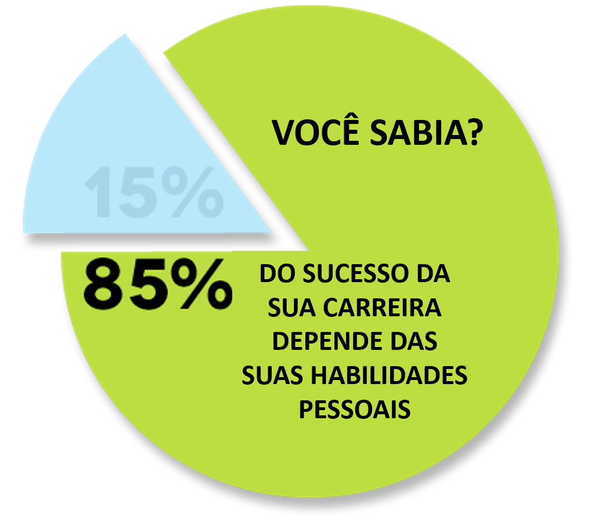

Aprendizagem ativa: Fornecendo nossa estrutura de conteúdo
Desde 1959, o Exército dos EUA investe uma quantidade considerável de recursos no desenvolvimento de procedimentos de treinamento baseados em tecnologia. Em 1968, o Exército dos EUA introduziu oficialmente uma doutrina de treinamento conhecida como "Engenharia de Sistemas de Treinamento".
PG Whitmore citou a definição CON Reg 350-100-1: "habilidades relacionadas ao trabalho que envolvem ações que afetam principalmente pessoas e papéis, por exemplo, inspeção de tropas, supervisão de pessoal de escritório, realização de estudos, preparação de relatórios de manutenção, preparação de relatórios de eficiência, elaboração de estruturas de pontes.
Em 1972, graças a um manual de treinamento do Exército dos EUA, o uso formal do termo "soft skills".
Na Conferência de Soft Skills da CONARC de 1972, o Dr. Whitmore apresentou um relatório com o objetivo de descobrir como o termo "soft skills" é entendido em várias escolas da CONARC (Continental Army Command - US Army).
Após projetar e processar um questionário, os especialistas formularam uma nova definição provisória: "As habilidades sociais são habilidades importantes relacionadas ao trabalho que envolvem pouca ou nenhuma interação com as máquinas e cuja aplicação no trabalho é bastante generalizada".
Eles criticaram ainda mais o estado do conceito, na época como vago com uma observação "em outras palavras, aquelas funções de trabalho sobre as quais sabemos bastante são habilidades duras e aquelas sobre as quais sabemos muito pouco são habilidades pessoais". Outro estudo imediato realizado por eles também foi concluído em tom negativo.
O psicólogo Nicholas Humphrey afirmou que a inteligência social, em vez da inteligência qualitativa, define os seres humanos. Hoje, muitas indústrias dão destaque às habilidades sociais de seus funcionários.
A seguir, é apresentada uma compilação de várias fontes, incluindo a Eastern Kentucky University, TheBalanceCareers.com, WikiJob e outras.
Comunicação - falando, escrevendo, apresentando, ouvindo pessoalmente ou por telefone.
Cortesia - maneiras, etiqueta, etiqueta nos negócios, gracioso, diz por favor e obrigado, respeitoso.
Flexibilidade - adaptabilidade, disposta a mudar, aprendiz ao longo da vida, aceita coisas novas, ajusta, ensinável.
Integridade - honesta, ética, moral elevada, tem valores pessoais, faz o que é certo.
Habilidades interpessoais - bondade, personalidade, senso de humor, amigável, carinho, empatia, tem autocontrole, paciente, sociabilidade, cordialidade, habilidades sociais.
Atitude positiva - otimista, entusiasta, encorajadora, feliz, confiante.
Profissionalismo - profissional, bem vestido, aparência, equilibrado.
Responsabilidade - responsável, confiável, faz o trabalho, engenhoso, autodisciplinado, quer fazer bem, consciente e bom senso.
Trabalho em equipe - cooperativo, se dá bem com os outros, agradável, solidário, prestativo, colaborativo.
Ética no trabalho - trabalho árduo, disposto a trabalhar, leal, iniciativa, auto-motivado, pontual, bom atendimento.
Gerenciamento de tempo - agendamento, gerenciamento de projetos, eficiência, acompanhamento.
Resolução de Conflitos - resolução de problemas, simpatia, escuta ativa, gestão de crises, negociação.
Liderança - tomar iniciativa, coordenar esforços entre os membros da equipe, orientar, inspirar os outros, tomar decisões difíceis, visão.
Equilíbrio - respeitando limites, autocuidado, gerenciando expectativas, gerenciando carga de trabalho.
Se você pode dominar isso, tem a outra metade da equação na sua caixa de ferramentas.